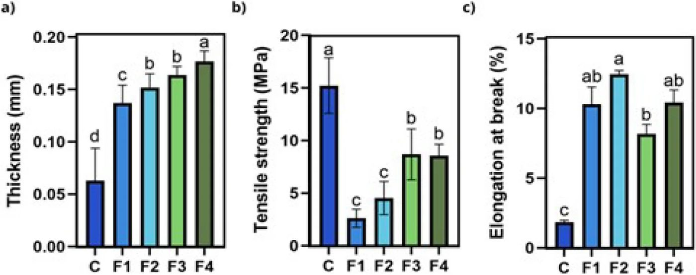
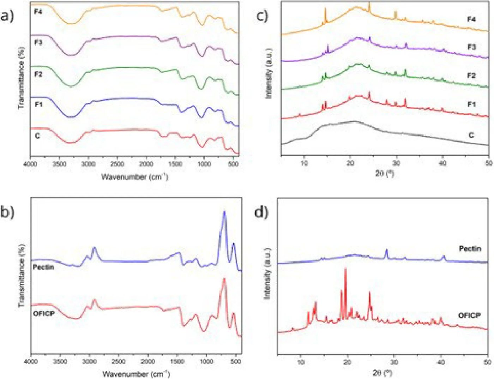

Кактус вместо пластика: новая жизнь отходов опунции в упаковке


Исследователи разработали экологичную упаковку на основе порошка из высушенных стеблей опунции и пектина. Этот материал полностью разлагается в почве за 28 дней. Пленка обладает высокой прочностью и защищает продукты от ультрафиолета, что делает ее перспективной альтернативой традиционному пластику.
Главное
- Прочность пленки увеличилась на 232% при добавлении пектина.
- Материал полностью распадается в почве в течение 28 дней.
- Высокая непрозрачность защищает продукты от ультрафиолета.
Подробнее
Для создания пленки использовали порошок из высушенных стеблей опунции (OFICP) в количестве 2 г, 30% глицерина в качестве пластификатора и варьируемое количество пектина (от 0,5 до 2,0 г). Увеличение доли пектина в составе значительно улучшило механические свойства материала: предел прочности при растяжении вырос на 232% (с 2,62 до 8,69 МПа) при переходе от состава F1 к F3.
Материал обладает гидрофильными свойствами, что подтверждается низкими углами контакта (30,29–39,39°) и высоким содержанием влаги (25,11–35,98%). Испытания в почве показали, что пленки начинают визуально разрушаться уже на 12-й день, а к 28-му дню процесс распада становится практически полным. Высокая непрозрачность пленок (22–25%) позволяет использовать их для защиты жиросодержащих продуктов от окисления под действием света.
Ограничения
Исследование проводилось в лабораторных условиях, поэтому требуется дополнительная проверка свойств пленки при различных режимах хранения.
Полный перевод статьи
Резюме
Пластиковая упаковка широко используется в пищевой промышленности, однако её способность сохраняться в окружающей среде столетиями стимулирует интерес к биоразлагаемым альтернативам. Целью данного исследования была разработка биоразлагаемой пленки с использованием порошка лиофилизированных кладодий Opuntia ficus-indica (OFICP) (2 г), глицерина (30% по массе) и различного количества коммерческого пектина: 0,5 г (F1), 1,0 г (F2), 1,5 г (F3) и 2,0 г (F4). Влияние содержания пектина на механические, термические, структурные, цветовые и влагозависимые свойства пленок оценивалось систематически, наряду с их биоразлагаемостью в почве и имитируемых морских условиях.
Важно
Увеличение содержания пектина повысило прочность на разрыв на 232% (с 2,62 до 8,69 МПа) и улучшило термическую стабильность пленок.
Составы с более высоким содержанием пектина продемонстрировали улучшенные механические характеристики, включая увеличение прочности на разрыв на 232% от F1 (2,62) до F3 (8,69), а также повышенную термическую стабильность. Из-за гидрофильной природы пектина и OFICP пленки показали низкие углы контакта (30,29–39,39°) и высокое содержание влаги (25,11–35,98%). Учитывая гидрофильность и влагозависимые свойства, данные пленки могут быть более пригодны для упаковки пищевых продуктов с низким содержанием влаги; однако для подтверждения их пригодности необходимы дальнейшие исследования в различных условиях хранения и окружающей среды.
Осторожно
Исследование проводилось в лабораторных условиях; для подтверждения пригодности пленок для реальных продуктов питания требуются дополнительные испытания.
Более того, в экспериментальных условиях пленки показали прогрессирующую визуальную дезинтеграцию в почве: составы F1 и F2 продемонстрировали значительное разрушение к 12-му дню, а все составы практически полностью разрушились к 28-му дню. Таким образом, полученные результаты свидетельствуют о том, что смешивание OFICP с коммерческим пектином позволяет создавать пленки с улучшенными свойствами, имеющие потенциал применения в пищевой упаковке. Кроме того, переработка побочных продуктов Opuntia ficus-indica представляет собой экологически ответственный подход к управлению сельскохозяйственными отходами, поддерживая разработку биоматериалов нового поколения для упаковки пищевых продуктов.
Ключевые слова: Полисахариды · Кактус · Устойчивое развитие · Пищевая упаковка · Лиофилизированный · Побочный продукт
Введение
Растущая обеспокоенность экологическими последствиями интенсивного использования пластиковой упаковки стимулировала поиск устойчивых альтернатив, особенно в пищевом секторе, где объемы утилизации материалов высоки. Пластиковая упаковка, преимущественно производимая из невозобновляемых источников, не подвергается биоразложению и вносит значительный вклад в загрязнение окружающей среды и накопление твердых отходов. В этом контексте биоразлагаемые пленки, изготовленные из природных биополимеров, стали перспективным решением, сочетающим технологическую функциональность с меньшим воздействием на окружающую среду, что соответствует принципам экономики замкнутого цикла и устойчивого развития.
Важно
Биоразлагаемые пленки из природных полимеров предлагают экологичную альтернативу традиционному пластику, соответствуя принципам устойчивого развития.
Среди этих материалов полисахариды растительного происхождения привлекают особое внимание благодаря своему структурному разнообразию и способности формировать непрерывные полимерные матрицы. В этом отношении Opuntia ficus-indica, вид кактуса, широко культивируемый в полузасушливых регионах, представляет собой перспективный, но недостаточно изученный ресурс. Его кладодии образуются в больших количествах при сельскохозяйственных работах и часто выбрасываются или используются не в полной мере, несмотря на то, что они богаты полисахаридами, пищевыми волокнами и другими функциональными компонентами. Недавние исследования показали, что материалы, полученные из кладодиев Opuntia ficus-indica, могут быть использованы для производства биоразлагаемых пленок с приемлемыми механическими и барьерными свойствами. Однако многие из этих подходов основаны на экстракции слизи или специфических фракций, что увеличивает сложность переработки и ограничивает масштабируемость. Альтернативной стратегией является прямое использование цельных кладодиев после сушки, что позволяет полностью переработать биомассу, упрощая этапы обработки. Лиофилизация (сублимационная сушка) позволяет сохранить структурные компоненты и облегчает получение однородных порошков, пригодных для создания пленок.
Несмотря на свой потенциал, пленки на биологической основе часто требуют добавления дополнительных молекул в состав для оптимизации таких характеристик, как гибкость и механическая прочность. Пектин, полисахарид, богатый остатками галактуроновой кислоты и обычно получаемый из цитрусовых, является эффективным вариантом для этой цели. Благодаря своим внутренним гелеобразующим и пленкообразующим способностям он хорошо интегрируется в биоразлагаемые матрицы, улучшая их механические, термические и барьерные характеристики. Таким образом, его включение в состав пленок способствует разработке материалов с повышенной структурной стабильностью и функциональной эффективностью. Пластификаторы также необходимы в пленках на основе биополимеров для преодоления хрупкости и улучшения гибкости. Глицерин является одним из наиболее часто используемых пластификаторов благодаря своей совместимости с гидрофильными полимерами и способности увеличивать подвижность цепей. Комбинация материала, полученного из кладодиев Opuntia ficus-indica, пектина и глицерина, представляет собой стратегию рецептуры, которая использует взаимодополняющие характеристики этих компонентов и может улучшить эксплуатационные качества пленок.
Пояснение
Лиофилизация — это метод удаления влаги из замороженного продукта в вакууме, позволяющий сохранить структуру и свойства сырья.
Хотя в ряде исследований изучались пленки, полученные из Opuntia ficus-indica или пектина по отдельности, исследования их совместного использования остаются ограниченными. Понимание того, как содержание пектина влияет на физико-химические, механические, термические и барьерные свойства пленок, включающих порошок лиофилизированных кладодиев Opuntia ficus-indica, имеет важное значение для развития производства экологически устойчивых упаковочных материалов. Поэтому целью данного исследования была разработка и характеристика биоразлагаемых смесовых пленок на основе порошка лиофилизированных кладодиев Opuntia ficus-indica (OFICP), пектина и глицерина, а также оценка их физико-химических, механических, термических и барьерных свойств для определения их пригодности для потенциального применения в пищевой упаковке.
Результаты
Внешний вид пленки
Первоначально были проведены предварительные испытания по формированию пленок с использованием различных концентраций OFICP и глицерина. Однако эти составы приводили к получению хрупких материалов, которые было трудно отделить от чашек Петри, и они не подходили для использования или дальнейшей характеризации. В результате в качестве контрольной системы был выбран состав только из пектина (2 г пектина + глицерин), который послужил эталонной матрицей для сравнения с композитными пленками OFICP/пектин. Кроме того, все композитные составы (F1–F4) позволили получить однородные пленки без видимых трещин или пузырьков воздуха, с которыми было легко работать (Рис. S1).
Важно
Использование только пектина в качестве контроля позволило создать стабильную матрицу, в то время как все композитные составы (F1–F4) сформировали однородные и удобные в обращении пленки.
Свойства, связанные с водой
Вода существенно влияет как на визуальное качество, так и на процессы порчи пищевых продуктов, что делает ее ключевым фактором поддержания безопасности при хранении. Чтобы обеспечить защиту продуктов, упаковочные материалы должны эффективно контролировать перенос влаги, выступая в качестве барьера против внешней влажности. Поэтому оценка свойств, связанных с водой, таких как содержание влаги, угол контакта, активность воды (Aw) и паропроницаемость (WVP), имеет важное значение для понимания и оптимизации характеристик пленок из смеси OFICP/пектин. В Таблице 1 представлены содержание влаги, Aw, WVP, угол контакта и изображение капли воды на поверхности пленок. Содержание влаги в пленках варьировалось в зависимости от состава. Что касается смешанных пленок, увеличение содержания пектина до 1,5 г приводило к снижению содержания влаги. Это можно объяснить образованием водородных связей между OFICP и пектином, что уменьшает количество групп –OH, способных взаимодействовать с водой. Эти результаты согласуются с предыдущими исследованиями.
Пояснение
Активность воды (Aw) — это показатель доступности свободной воды в продукте или материале, которая может способствовать росту микроорганизмов.
Осторожно
Поскольку объем раствора для формирования пленки был одинаковым для всех образцов, а содержание сухих веществ варьировалось, толщина пленок не контролировалась как независимая переменная, что могло повлиять на результаты WVP.
Включение OFICP повлияло на значения Aw и WVP, которые следовали определенной тенденции: по мере увеличения содержания пектина паропроницаемость и активность воды также возрастали, что указывает на более проницаемую структуру. Активность воды варьировалась от 0,408 в F1 до 0,470 в контрольной пленке, что ниже значений, сообщенных в литературе для пленок на основе пектина (0,614–0,652). Несмотря на различия, полученные значения Aw отражают низкое содержание свободной воды внутри матрицы пленки, что согласуется с физико-химическими свойствами используемых полимеров. Следует отметить, что различия в толщине пленок между составами могли способствовать наблюдаемым вариациям WVP и механических свойств. Значения WVP варьировались от 2,78 (г·м⁻¹·с⁻¹·Па⁻¹) для контрольной пленки до 0,54 (г·м⁻¹·с⁻¹·Па⁻¹) для состава F4. Наиболее высокие значения наблюдались в составах F3 и F4, которые значительно отличались от F1 и контрольной пленки. Это увеличение можно объяснить добавлением твердых веществ в составы, в частности, большими количествами пектина, добавленного к самому OFICP. Кроме того, необходимо учитывать гидрофильный характер как полимеров, так и пластификатора, поскольку гигроскопичность глицерина способствует более сильному взаимодействию с молекулами воды, усиливая поглощение и проницаемость, при этом снижая барьерные свойства пленки.
Таблица 1 Содержание влаги, активность воды (Aw), паропроницаемость (WVP), угол контакта и изображение капли воды на поверхности C = контрольная пленка (2 г пектина); F1 (0,5 г пектина + 2 г OFICP), F2 (1,0 г пектина + 2 г OFICP), F3 (1,5 г пектина + 2 г OFICP), F4 (2 г пектина + 2 г OFICP). Среднее значение из трех измерений со стандартным отклонением, одинаковая буква в столбце указывает на отсутствие значимой разницы между средними значениями по тесту Тьюки (p < 0,05).
Угол контакта дает представление о смачиваемости поверхности пленок. Меньшие углы (< 90°) указывают на высокую смачиваемость, тогда как большие углы (> 90°) свидетельствуют о более гидрофобной поверхности. Все пленки в этом исследовании имели углы контакта менее 90°, что подтверждает их гидрофильную природу. Среди них только контрольная пленка показала значительно больший угол контакта (p < 0,05), что указывает на менее смачиваемую поверхность по сравнению со смешанными составами. Эти результаты согласуются с предыдущими исследованиями: сообщалось о значениях угла контакта 26,94° для пленок крахмал/OFICP без обработки pH, в то время как для пленок OFICP–агар, содержащих 30% (мас./мас.) глицерина, наблюдались значения 26,40°. Интересно, что было также продемонстрировано, что регулировка pH может сильно влиять на смачиваемость, при этом для пленок крахмал/OFICP, обработанных при pH 12, сообщалось об угле контакта 70,85°. Это позволяет предположить, что модификация pH OFICP может быть перспективной стратегией для настройки гидрофобности поверхности в будущих составах.
Непрозрачность и цвет пленок
Толщина пленки играет решающую роль в определении их общих характеристик, существенно влияя на такие свойства, как механическая прочность, барьерная эффективность и удобство в обращении. Рис. 1 показывает толщину и механические свойства разработанных пленок. Как показано на Рис. 1a, увеличение содержания пектина в смесях привело к получению более толстых пленок: значения толщины варьировались от 0,137 мм для состава F1 до 0,177 мм для F4. Эта тенденция была ожидаемой из-за увеличения содержания сухих веществ.
Механические свойства
Контрольный состав, содержащий 2 г пектина без добавления OFICP, использовался в качестве эталонной пленки для оценки влияния порошка кладодий на свойства биоразлагаемых пленок. Что касается прочности на разрыв (Рис. 1b), контрольная пленка (C) продемонстрировала самое высокое значение (15,23 МПа), значительно превосходя все остальные составы. Напротив, прочность на разрыв пленок OFICP/пектин постепенно увеличивалась от F1 (2,62 МПа) до F3 (8,69 МПа), при этом существенной разницы между F3 и F4 не наблюдалось. Это плато предполагает, что упрочняющий эффект пектина может достигать точки насыщения после определенной концентрации, после чего дальнейшего увеличения прочности на разрыв не происходит. *C = контрольная пленка (2 г пектина); F1 = (0,5 г пектина + 2 г OFICP), F2 = (1,0 г пектина + 2 г OFICP), F3 = (1,5 г пектина + 2 г OFICP), F4 = (2 г пектина + 2 г OFICP). По сравнению с предыдущими исследованиями, текущие результаты демонстрируют заметное улучшение. Де Фариас и соавт. сообщили о более низкой прочности на разрыв (3,0 МПа) для пленок, состоящих из крахмала и OFICP, в то время как Махлуфи и соавт. наблюдали значение 6,7 МПа для пленок, содержащих агар, OFICP и 30% глицерина (по массе). Эти сравнения подчеркивают потенциал умеренных концентраций пектина для значительного повышения прочности на разрыв пленок на основе кактуса.
Важно
Контрольная пленка обладает максимальной прочностью (15,23 МПа), но минимальной эластичностью (1,86%), тогда как добавление OFICP повышает гибкость пленок.
Механические свойства пленок выявили типичный компромисс между прочностью на разрыв и удлинением. Контрольная пленка показала самую высокую прочность на разрыв, что указывает на способность выдерживать большую силу до разрушения. Однако она также показала самое низкое удлинение при разрыве (1,86%), что свидетельствует о жесткой и хрупкой структуре с ограниченной гибкостью. Напротив, составы F1 и F2 продемонстрировали значительно меньшую прочность на разрыв, но более высокие значения удлинения (10,30% и 12,46% соответственно), что отражает более эластичную и пластичную природу. В результате, хотя эти пленки более подвержены разрыву под воздействием сильной нагрузки, они лучше способны растягиваться и адаптироваться к механическому напряжению. Эти данные подчеркивают многофункциональную роль OFICP в модуляции баланса между прочностью и гибкостью при разработке биоразлагаемых пленок: контрольная пленка более устойчива, но хрупка, а пленка F2 менее устойчива, но более гибкая.
Термическая стабильность
Оценка деградации. Поведение пленок при распаде оценивалось как в почвенных, так и в морских условиях. Процесс деградации различных составов оценивался качественно путем визуального осмотра образцов с течением времени. Из-за сильного прилипания частиц почвы к поверхностям пленок измерения потери массы были невозможны; поэтому визуальный анализ был принят в качестве основного метода мониторинга процесса деградации. Структура пленок постепенно разрушалась с течением времени (Рис. SN4). К шестому дню испытаний все образцы пленок претерпели значительные изменения в цвете и структурной целостности, что указывало на начало деградации полимера. Этот процесс, по-видимому, в основном обусловлен влажностью окружающей среды и температурой, которые вызывают набухание пленки и последующую фрагментацию. К 12-му дню пленки F1 и F2 почти полностью деградировали, тогда как составы с более высоким содержанием пектина показали большую устойчивость к разложению. Это явление можно объяснить высоким сродством порошка кладодий Opuntia ficus-indica к воде: пленки с более выраженным гидрофильным характером позволяют влаге и микроорганизмам легче проникать в их структуру, что ускоряет процесс деградации. К 28-му дню все составы подверглись обширному распаду, и оставшиеся фрагменты пленок уже не отличались визуально от окружающей почвы. Этот распад происходил значительно быстрее, чем обычно наблюдается для традиционной пластиковой упаковки. Эти результаты согласуются с предыдущими данными Маннаи и соавт. и Лопес-Диас и соавт., которые сообщали о столь же быстром разрушении пленок на основе слизи Opuntia ficus-indica и питайи (Hylocereus undatus) в течение 28–40 дней в почве и органическом компосте соответственно.
Осторожно
Оценка деградации проводилась визуально; для точного определения кинетики распада требуются количественные методы (например, измерение выделения CO₂).
В имитационном тесте на деградацию в морской среде все образцы пленок полностью распались в течение 2 часов 55 минут. Эта быстрая деградация была ожидаемой, учитывая гидрофильную природу полимеров, присутствующих в матрице пленки, особенно OFICP и пектина. Хотя эти результаты предоставляют качественные доказательства деградации в экологически значимых условиях, необходимы количественные анализы с использованием стандартизированных методов (например, потеря массы при контролируемом компостировании, выделение CO₂ или тесты на биоразлагаемость по стандартам ASTM/ISO) для точного определения кинетики деградации и обеспечения более полных сравнений с традиционными материалами.
Заключение
В данном исследовании были успешно разработаны и охарактеризованы биоразлагаемые пленки на основе порошка кладодий Opuntia ficus-indica и пектина, что подчеркивает значимость природных макромолекул, в частности полисахаридов, для создания экологически устойчивой упаковки. Результаты показывают, что комбинация порошка кладодий Opuntia ficus-indica (OFICP) и пектина позволяет получить пленки с адекватными механическими характеристиками, хорошей термической стабильностью и эффективной биоразлагаемостью как в почвенных, так и в морских условиях. Примечательно, что увеличение содержания пектина улучшило ряд свойств пленок, при этом составы F3 и F4 продемонстрировали наиболее сбалансированные показатели по результатам всех оценок.
Важно
Составы F3 и F4 показали наилучший баланс механических и термических свойств, что делает их перспективными для упаковки продуктов с низкой влажностью.
Благодаря своей гидрофильной природе и физико-химическим характеристикам, данные пленки могут быть потенциально использованы в системах биоразлагаемой упаковки и смежных областях, особенно для продуктов с низким содержанием влаги. Тем не менее, необходимы дополнительные исследования с использованием реальных моделей пищевых продуктов и условий хранения для подтверждения их пригодности для упаковки пищевых продуктов. Кроме того, использование недостаточно востребованных полисахаридов, таких как цельные кладодии Opuntia ficus-indica, в сочетании с коммерческим пектином представляет собой перспективную стратегию разработки устойчивых биоматериалов с потенциальной экологической выгодой.
Осторожно
Данные результаты получены в лабораторных условиях; для подтверждения пригодности пленок в качестве пищевой упаковки требуются испытания с реальными продуктами питания.
Методы
Материалы и методы представлены в качестве дополнительных материалов.


Схема исследования
Статья опубликована в рецензируемом журнале Plant foods for human nutrition (Dordrecht, Netherlands). Но и опубликованный результат — одно исследование, а не окончательный вывод.
Источник
| Источник | Категория | Лицензия |
|---|---|---|
| Plant foods for human nutrition (Dordrecht, Netherlands) (Europe PMC) | packaging | CC BY 4.0 |
Источники
| Источник | Ссылка |
|---|---|
| Страница статьи | europepmc.org |
| Полный текст (PDF) | link.springer.com |
| Копия PDF | github.com |
| DOI | doi.org |
| Метаданные Crossref | api.crossref.org |
| Europe PMC | europepmc.org |